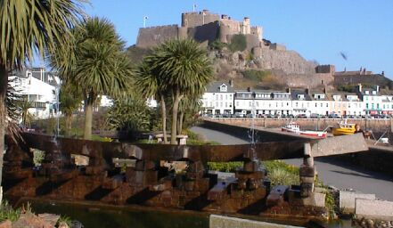
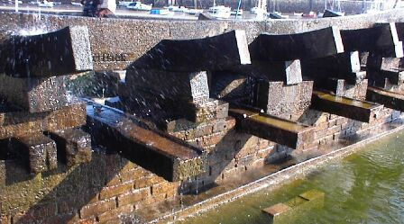
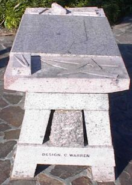
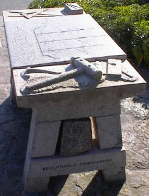
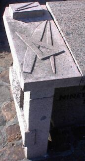
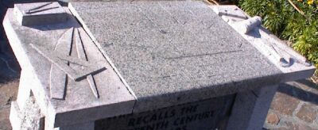
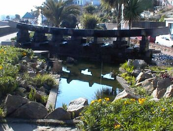
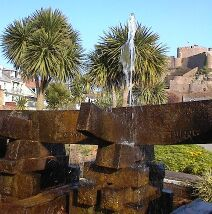
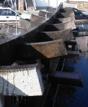
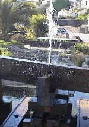

|
This symbolic keel recalls the nineteenth century shipyards of Gorey |



The answer may not be quite you would expect. For the granite centipede-like structure is a new ornamental fountain at Gorey.
When completed, hopefully by the end of next month, three jets of water will shoot into the air - possibly as high as 8 ft.
The idea is that they should look like three masts standing of the keel and ribbed sides of a ship.
Engraved on the sides of the keel are the names of 16 of the largest ships built at Gorey when ship construction was a thriving industry in the area during the last century. The idea of the fountain is to recall those days.
The keel is laid on bricks possibly as old as Gorey's shipbuilding industry. They were taken from the old prison at Newgate Street.
The fountain was designed by Mr. Cyril Warren, at Public Works, and already one elderly passer-by has stopped to recall when he worked on a ship at Gorey himself.
The grandfather of Public Works' president, Senator John Le Marquand, also worked there - 150 years ago!
Jersey Evening Post 14/5/1976



Floodlights at Gorey pick out two symbolic reminders of Jersey's past. The castle which has stood for centuries on Mont Orgueil recalls the Islands's resistance to the French and to the Parliamentary forces during the Civil War; and the fountain in the shape of a ship's keel bears the names of some of the vessels builts in the yards which used to be dotted along the nearby coastline.
JEP 30/7/1977



